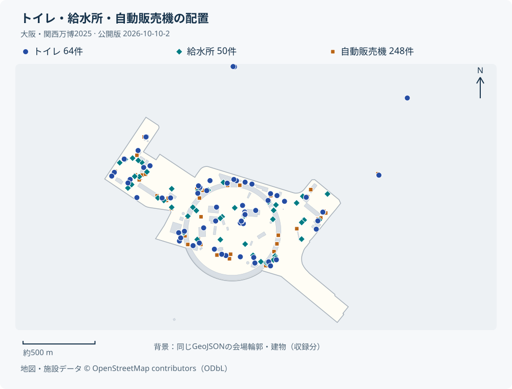

公開データで、施設を探してみる
施設データだけで動く検索例です。名前・種別・国名で絞り込み、万博マップで場所を確認できます。
名称が未記録の場合は種別を表示します。
公開データを読み込んでいます…
施設データ © OpenStreetMap contributors（ODbL）。この検索の作り方を見る
データを使う
施設検索や一覧アプリは、約1.1 MBのGeoJSONから始められます。点・線・面の形状と、名称・種別などのOSMタグを収録しています。
収録内容：マップで使用しているOSM由来の地物データ3,241件を収録しています。施設・建物・通路に加え、入口・樹木・ベンチ・フェンスなども含み、名称が未記録の地物もあります。用途に応じてタグで抽出して利用できます。（名前あり1,113件・名前なし2,128件）
施設検索、地図アプリの開発、施設配置の分析、当時の記録の活用などに利用できます。
施設データ：閉幕時点（2025年10月13日）の記録を目的に、2025年10月30日に取得したOSMデータと、取得後の写真・公式サイト情報や遊具などの補足を収録しています。厳密な閉幕日のスナップショットではありません。
保存できない場合は、ファイルを開いて保存してください。
公開版 2026-10-10-2。
CSVには主要なタグを列として収録しています。タグの空欄は未記録（タグなし）を表し、「なし」を意味しません。営業時間などは収録時点の情報です。
AIへの依頼文を見る
https://k-sakanoshita.github.io/expo2025-maniacs/data.html このページのデータと開発ガイドを使い、パビリオンを国名で検索できるアプリを作ってください。 まずGeoJSONだけで動く施設検索を作り、OSMのクレジットを表示してください。 閉幕日の背景地図も必要な場合は、配布元の案内に従ってPMTilesを取得し、自分のサーバーから配信してください。
このページのURLと、作りたいものをAIに伝えてください。
公開データで見る、当時のトイレ・給水所・自動販売機

- トイレ 64件
- 給水所 50件
- 自動販売機 248件
施設データ © OpenStreetMap contributors（ODbL）。
抽出条件と作成コードを見る
amenity=toilets（64件）、amenity=drinking_water（50件）、amenity=vending_machine（248件）で抽出しています。件数は地物の数で、便器や設備の台数ではありません。
点は元座標、点以外は境界ボックスの中心に記号を置いています。入口の位置を示すものではありません。会場輪郭（tourism=theme_park）と建物（buildingタグのある面）も同じGeoJSONから描画しています。
node scripts/render-facility-example.cjs当時の背景地図も使いたいとき
背景地図：2025年10月13日版です。当時の道路や建物と一緒に施設を表示できます。Japan PMTiles配布サイトで公開されています。
背景地図は任意です。施設検索や集計だけなら、上の施設データで始められます。
背景地図を取得して使う手順
- 閉幕日版PMTiles（約1.5 GB）と対応スタイルJSONを取得します。
- 背景地図付きサンプルHTMLと同じフォルダーに、
expo2025.geojson、japan-20251013.pmtiles、japan-20251013.jsonを置きます。 - Rangeリクエストに対応するWebサーバーで公開します。別ドメインから配信する場合はCORSも設定してください。
配布元のPMTiles URLをアプリから直接参照せず、自分のサーバーに配置してください。サンプルは同じフォルダーのPMTilesを読み込みます。
フォント・アイコン画像・JavaScriptは外部サービスを参照します。サンプルの描画処理はテスト済みですが、PMTiles実ファイルを配置した地図表示は未確認です。
開発ガイド・データ仕様
施設データだけで始める
GeoJSONの取得URLは公開版ごとに固定します。現在のOverpass APIで再取得すると内容が変わるため、以下のURLを使用してください。
const url = "https://k-sakanoshita.github.io/expo2025-maniacs/data/releases/2026-10-10-2/expo2025.geojson";
const response = await fetch(url);
if (!response.ok) throw new Error(`データ取得失敗: ${response.status}`);
const data = await response.json();
const pavilions = data.features.filter(f =>
f.properties.tags.amenity === "exhibition_centre");
const toilets = data.features.filter(f =>
f.properties.tags.amenity === "toilets");
const water = data.features.filter(f =>
f.properties.tags.amenity === "drinking_water");このページの検索例は公開データの全件を対象に、名称・別名・国名・国コードで検索します。上の抽出例は、用途に応じて対象を絞り込む場合に使えます。
国コードは tags.country に入り、複数国はセミコロン区切りです。国名は new Intl.DisplayNames(["ja"], { type: "region" }) で変換できます。EU は「欧州連合」、ASEAN は「東南アジア諸国連合」として扱います。
country はパビリオンのほか旗竿にも付いています。パビリオンを抽出する場合は施設タグも併用してください。
データ仕様
GeoJSONは FeatureCollection、座標系はWGS 84、座標の順序は経度・緯度です。点・線・面と複数の形状を含みます。すべてをマーカーに変換せず、形状に応じて表示してください。
| 項目 | 型 | 内容 |
|---|---|---|
feature.id / properties.osm_id | 文字列 | node/123、way/123、relation/123。種別を含めて識別します。 |
properties.name | 文字列 | OSMの name。名称がない場合は空文字。 |
properties.kind | 文字列 | amenity → tourism → leisure → shop → barrier → highway → building → natural → playground の順で最初に存在する値。該当なしは空文字。マップの表示カテゴリとは異なります。 |
properties.tags | オブジェクト | 元のOSMタグを保持。国コードは country、写真は image や wikimedia_commons、公式サイトは website など。各項目は存在する場合のみ利用します。 |
geometry | オブジェクト | 地物の位置・形状。線や面の輪郭を保持しています。 |
複数の国コードはセミコロン区切りです。写真タグには画像URL以外に File: や Category: が入る場合があります。OSMタグには欠損や表記揺れがあります。
CSVはUTF-8。従来の osm_id,name,kind,longitude,latitude,geometry_type,tags_json に、amenity,tourism,shop,country,wheelchair,opening_hours,website,wikidata の8列を追加しています。tags_json には全タグを保持し、複数国の country は元のセミコロン区切りのまま収録しています。
点以外の代表位置は境界ボックスの中心です。敷地内や入口の位置を保証しないため、輪郭が必要な用途にはGeoJSONを使ってください。
取得履歴・公開版の詳細
対象は大阪・関西万博の会場（夢洲）と周辺。2025年10月13日の閉幕時点の記録を目的としていますが、厳密な閉幕日のスナップショットではありません。元のOverpass JSONに記録された 2025-10-30T16:07:40Z は取得時のOSM基準日時であり、施設の対象時点ではありません。
GeoJSON・CSVはタグを持つ3,241件（点2,770件・線171件・面300件）。形状構築用のタグなしノードは元データに残しています。
ファイルサイズ・SHA-256・公開版の取得URLは 公開版メタデータ（JSON）を参照してください。
利用条件とクレジット
公開データの正確性・完全性や、特定の用途への適合性は保証しません。誤りや欠落が含まれる場合があるため、利用目的に応じて内容をご確認ください。
会場・施設データはOpenStreetMap由来のデータで、Open Database License（ODbL）で提供します。利用時は出典を表示し、改変したデータベースを公開する際はODbLの条件に従ってください。詳しくは OpenStreetMapの著作権・ライセンスをご確認ください。
表示例（OSM表記には上記の著作権ページへのリンクを付けてください）：
地図・施設データ © OpenStreetMap contributors（ODbL） 施設データ提供：EXPO2025 万博マニアックマップ（公開版 2026-10-10-2）
背景地図の帰属表示は削除しないでください。写真は画像ごとの出典・ライセンスが適用されます。この配布には写真の実ファイルや3Dモデルを含めていません。サンプルHTMLとサイトのソースコードは MITライセンスです。
公開履歴・連絡先
2026-10-10-2：CSVに主要タグ8列を追加。地物の追加・削除・属性変更はなく、GeoJSON・元データは初回版と同じ内容です。
不足情報や誤りの報告、活用事例は GitHub Issuesへお寄せください。